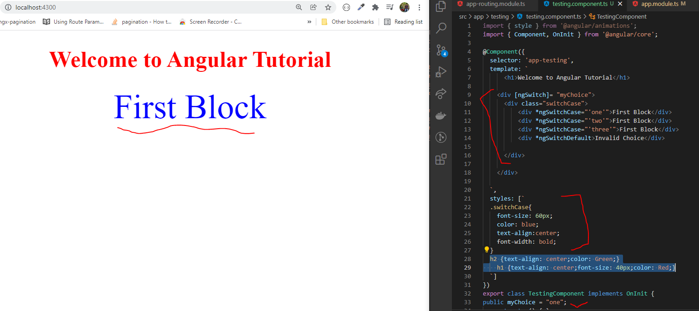

ngSwitch Directive
- The [ngSwitch] directive on a container specifies an expression to match against.
- The expressions to match are provided by ngSwitchCase directives on views within the container.
- If there are no matches, a view with the ngSwitchDefault directive is rendered.
- Example:
